今年適逢仁寶40週年，公司舉辦了盛大家庭日慶祝活動，活動地點選擇在六福村，同時家裡兩位小朋友在幾年前也是仁寶六萬六寶寶，全家報名一起參與家庭日活動格外特別有意義，除了參加公司家庭日活動，同時也安排了石門福華飯店兩天一夜小旅行。
6/1早上出門天氣還不錯，全家帶著喜悅的心情驅車前往今天的目的地六福村，在北二高路段從三峽到中壢沿路上車子變多開始走走停停，最後要準備進入高原交流道卻因為車流過大整個塞住不動，心情頓時忐忑不安起來，眼看時間一分一秒過去，一轉眼已過了10點活動報到時間，但車子依然是龜速前進，於是乎我們決議改道轉開往關西交流道，同一時間也收到仁寶Line訊息轉達參與人數踴躍，報到時間延長到下午1點，車子在下了關西交流道在便利商店稍作休息後，沿著指標以及工作人員引導將車子開到六福村停車場。
到了目的地停好了車，帶著家人遵循著報到路線引導完成了報到並進入園區，排隊的隊伍比旺年會隊伍還壯觀，仁寶的員工也都很守秩序排隊並沿著動線前進，大約10幾分就完成了報到入園。
入園後，彷彿就像參加一場華麗的嘉年華會，小朋友第一次參加公司活動特別開心，沿路上有按摩小站、精彩手作坊以及真人夾娃娃機，並有工作人員打扮著小丑裝扮做造型氣球以及其他各式各樣活動攤位，到了舞台區我們剛好趕上了40週年慶生日蛋糕活動。
| 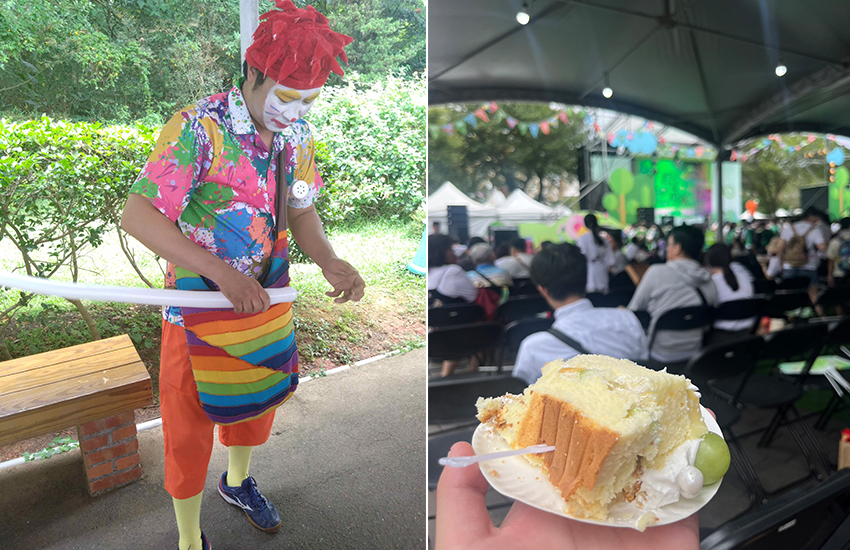 |
由於時間已經接近中午，在舞台區兩側有各式美食攤位以及排滿絡繹不絕的人群，剛好也是到了吃飯時間，我們先在附近找一間速食餐廳，點了漢堡套餐先大快朵頤填飽五臟廟，吃完午餐休息片刻開始進行下午的玩樂行程。
| 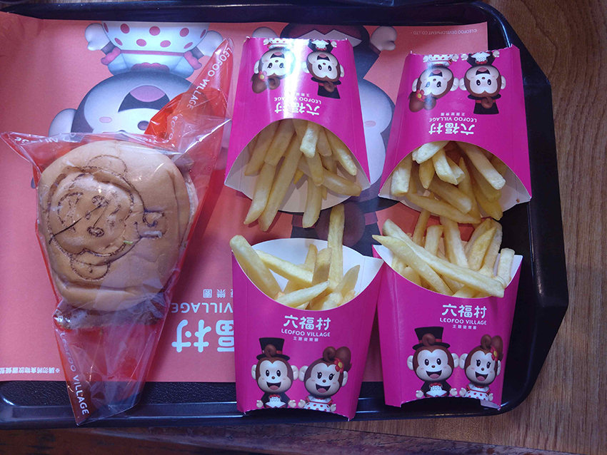 |
考慮到各項遊樂設施排隊人龍很長，各項設施至少都要排50分鐘以上，小朋友選擇了底下三項可愛好玩的遊樂設施，搭乘著阿拉伯皇家駿馬在富麗堂皇的皇宮，以及徒步參觀侏儸紀失樂園，裡面有暴龍、腫頭龍、三角龍、劍龍等，還可以爬上失樂園的樹屋俯瞰六福村各項設施的景點，最後搭乘巨嘴鳥的遊樂設施悠遊上下旋轉飛翔，這幾項都很適合大人小孩一起遊玩的設施。
1. 阿拉伯皇宮－阿里巴巴40大盜
2. 南太平洋－侏儸紀失樂園
3. 南太平洋－巨嘴鳥
| 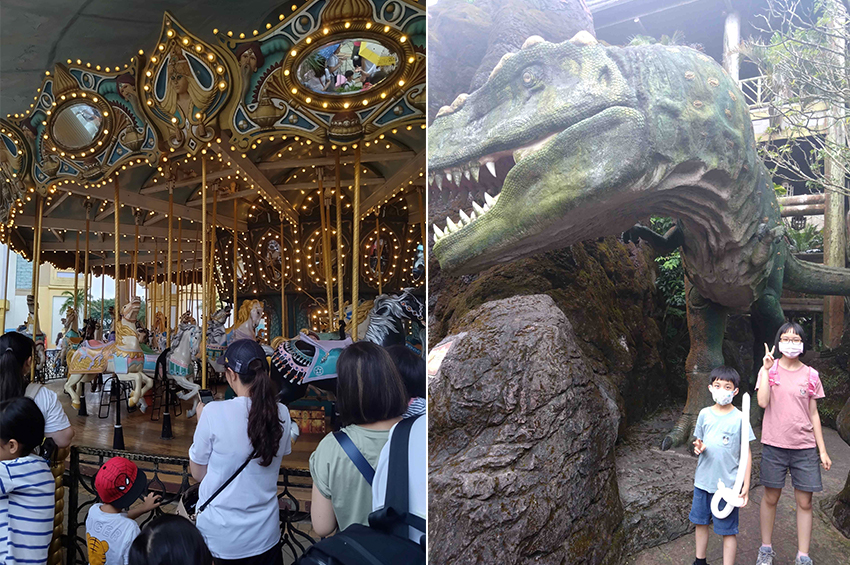 |
約莫時間已經快四點鐘，天空也開始飄著細雨，我們帶著依依不捨的心情結束今天家庭日活動，繳了停車費用後，隨即開車前往石門福華渡假飯店，由於天色已晚肚子也飢腸轆轆，臨時決定在石門山路邊一間食堂順道買了晚餐外帶回到飯店享用。
| 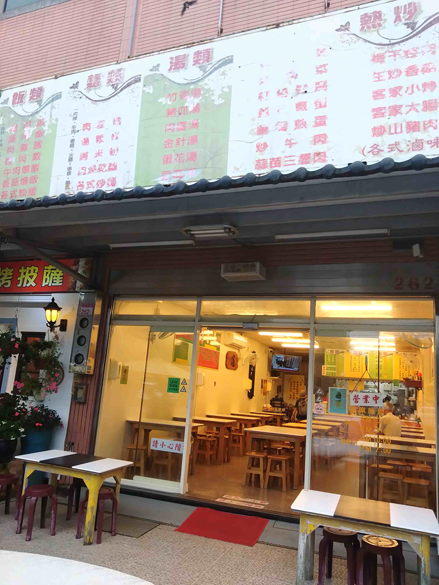 |
石門福華渡假飯店雖然已經是老飯店了，從外觀可以看到歷史歲月的痕跡，但內部有重新整修，裝潢整修過和新開的飯店並沒有不同，我們入住的家庭房空間乾淨又寬敞，窗簾拉開可以從外面陽台看到石門水庫風景，冰箱打開也有喝不完的免費飲料，公司家庭日活動和飯店有提供限定版零食以及在地小農紅茶&咖啡，雖然窗外有小雨，但仍可以喝著下午茶一邊欣賞水庫湖景。
| 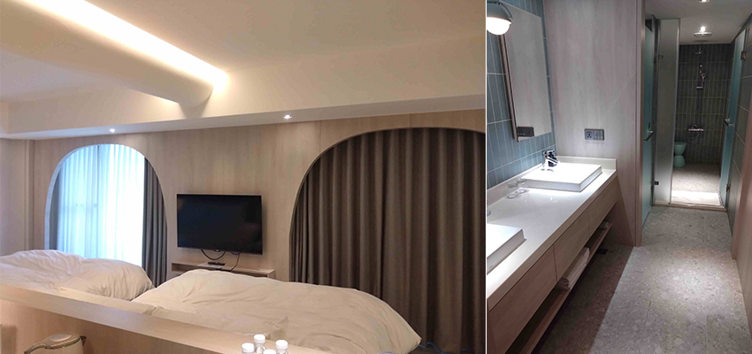 |
| 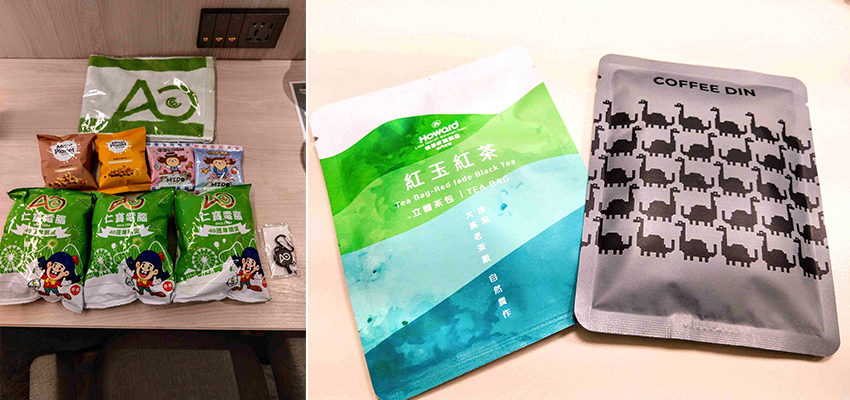 |
| 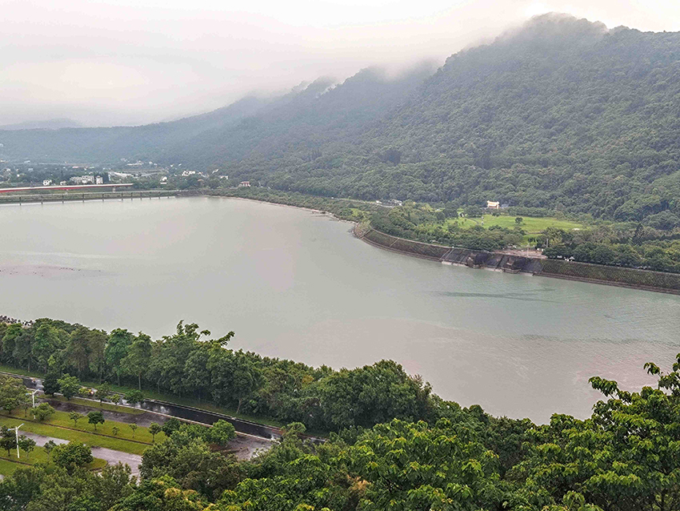 |
晚餐過後，休息看了一會兒電視，帶著孩子們玩了飯店提供的休閒玩樂設施（投籃機、桌上冰球、積木遊戲），每項設施都可以重複盡情玩樂，玩到累了回房間梳洗一番後很快就進入了甜蜜夢鄉。
| 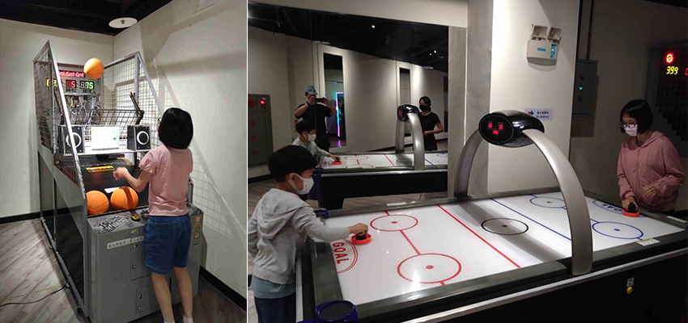 |
| 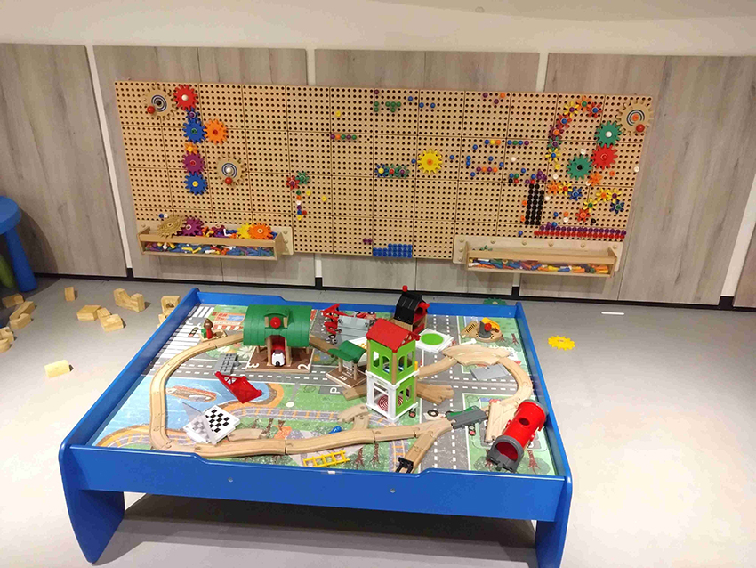 |
隔日早上起床，全家一起到飯店餐廳吃早餐，福華飯店的早餐還算不錯，中/西式餐點以及牛肉麵、沙拉區，還有冰淇淋食材都很新鮮美味，在享用美好的早餐過後，我們收拾了行李把兩天滿滿的幸福回憶打包回家。
| 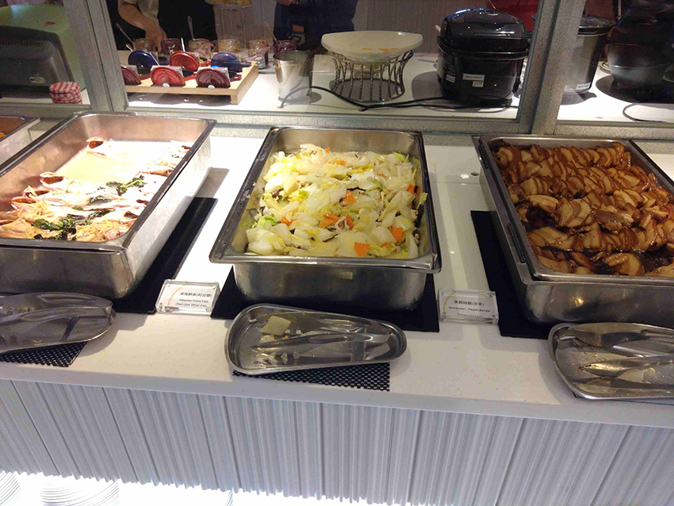 |
| 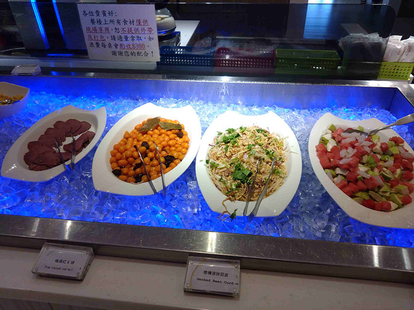 |